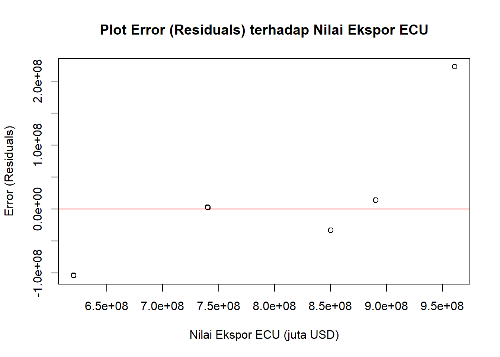
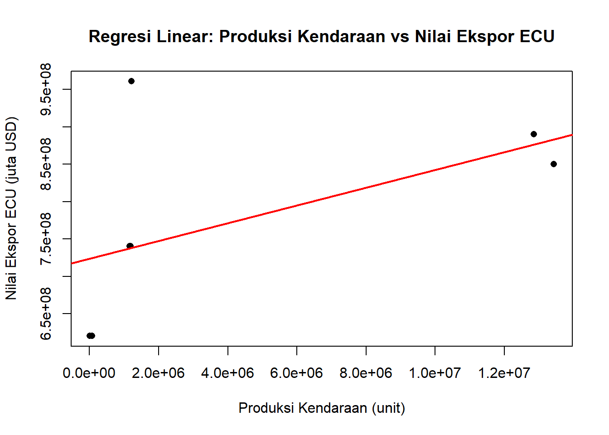

Pengaruh Ekspor ECU terhadap Industri Otomotif di Indonesia
Metode Penelitian Politeknik APP Jakarta
Author
Clara Hasian Simanjuntak
Published
January 17, 2024
1 Pendahuluan
1.1 Latar belakang
Electronic Control Unit (ECU) adalah komponen yang sangat penting dalam kendaraan modern karena berfungsi untuk mengatur berbagai sistem elektronik, seperti mesin dan transmisi. Seiring dengan meningkatnya permintaan global terhadap kendaraan yang lebih efisien, ekspor ECU menjadi peluang strategis bagi Indonesia untuk berperan lebih besar dalam rantai pasok otomotif internasional.
Indonesia memiliki potensi yang besar dalam memproduksi dan mengekspor ECU. Namun, tantangan seperti ketergantungan pada teknologi asing dan bahan baku impor masih membatasi kapasitas produksi ECU di dalam negeri. Penelitian ini bertujuan untuk menganalisis hubungan antara ekspor ECU dan produksi kendaraan nasional selama periode 2018 hingga 2022. Dengan fokus pada nilai ekspor ECU dan produksi kendaraan, penelitian ini diharapkan dapat memberikan wawasan bagi pengembangan teknologi lokal serta penyempurnaan kebijakan ekspor untuk meningkatkan daya saing industri otomotif Indonesia.
1.2 Ruang lingkup
Penelitian ini menganalisis pengaruh nilai ekspor Electronic Control Unit (ECU) terhadap produksi kendaraan nasional di Indonesia selama periode 2018-2022. Fokus penelitian mencakup nilai ekspor ECU, yang diklasifikasikan berdasarkan kode HS 8543.70, dan jumlah produksi kendaraan nasional.
Batasan penelitian meliputi cakupan waktu lima tahun, fokus geografis di Indonesia, dan analisis khusus pada nilai ekspor ECU. Teknik analisis yang digunakan adalah regresi linier sederhana untuk mengukur pengaruh langsung ekspor ECU terhadap produksi kendaraan. Penelitian ini bertujuan memahami kontribusi ekspor ECU terhadap kinerja industri otomotif nasional.
1.3 Rumusan masalah
Bagaimana tren nilai ekspor Electronic Control Unit (ECU) di Indonesia selama periode 2018-2022?
Apakah nilai ekspor ECU berpengaruh secara signifikan terhadap produksi kendaraan nasional di Indonesia?
Bagaimana proyeksi nilai ekspor ECU dan produksi kendaraan nasional di masa depan?
1.4 Tujuan dan manfaat penelitian
Penelitian ini bertujuan untuk menganalisis pengaruh nilai ekspor Electronic Control Unit (ECU) terhadap produksi kendaraan nasional di Indonesia dari tahun 2018 hingga 2022. Dengan memahami hubungan antara nilai ekspor ECU sebagai variabel independen dan produksi kendaraan nasional sebagai variabel dependen, penelitian ini diharapkan dapat memberikan wawasan yang relevan bagi pengembangan industri otomotif. Manfaat dari penelitian ini antara lain memberikan informasi yang berguna bagi pemerintah dan pembuat kebijakan dalam merumuskan kebijakan ekspor yang lebih efektif, serta membantu industri otomotif dalam meningkatkan daya saingnya. Selain itu, penelitian ini juga diharapkan dapat memperkaya literatur akademik mengenai kontribusi ekspor komponen elektronik terhadap pertumbuhan industri manufaktur otomotif.
1.5 Package
Ini tidak wajib ada di packages yang digunakan antara lain sebagai berikut:
library(tidyverse)
Warning: package 'tidyverse' was built under R version 4.4.2
Warning: package 'ggplot2' was built under R version 4.4.2
Warning: package 'dplyr' was built under R version 4.4.2
Warning: package 'lubridate' was built under R version 4.4.2
── Attaching core tidyverse packages ──────────────────────── tidyverse 2.0.0 ──
✔ dplyr 1.1.4 ✔ readr 2.1.5
✔ forcats 1.0.0 ✔ stringr 1.5.1
✔ ggplot2 3.5.1 ✔ tibble 3.2.1
✔ lubridate 1.9.4 ✔ tidyr 1.3.1
✔ purrr 1.0.2
── Conflicts ────────────────────────────────────────── tidyverse_conflicts() ──
✖ dplyr::filter() masks stats::filter()
✖ dplyr::lag() masks stats::lag()
ℹ Use the conflicted package (<http://conflicted.r-lib.org/>) to force all conflicts to become errors
library(readxl)
Warning: package 'readxl' was built under R version 4.4.2
2 Studi pustaka
Penelitian ini mendukung temuan Baldwin dan Harrigan (2019) yang menyatakan bahwa ekspor komponen otomotif, seperti Electronic Control Unit (ECU), dapat meningkatkan efisiensi produksi dan daya saing industri otomotif. Dalam penelitian ini, hubungan positif antara nilai ekspor ECU dan produksi kendaraan nasional di Indonesia selama periode 2018-2022 berhasil diidentifikasi melalui analisis regresi linier sederhana. Hasil ini menunjukkan bahwa peningkatan ekspor ECU dapat mendukung pertumbuhan produksi kendaraan nasional, sekaligus meningkatkan daya saing industri otomotif Indonesia di pasar global.
Selain itu, penelitian ini relevan dengan temuan Edwards dan Lawrence (2020) yang menyoroti pentingnya stabilitas kurs Rupiah/USD dalam menentukan daya saing ekspor. Walaupun penelitian ini tidak secara langsung memasukkan variabel fluktuasi kurs, hasil analisis menunjukkan bahwa faktor eksternal seperti kurs dapat memengaruhi performa ekspor ECU. Stabilitas ekonomi yang mendukung kebijakan ekspor berpotensi meningkatkan volume ekspor dan mengurangi ketergantungan pada impor bahan baku.
Metode regresi linier sederhana yang digunakan dalam penelitian ini juga sejalan dengan rekomendasi studi pustaka sebelumnya, di mana teknik ini efektif dalam mengukur hubungan antara dua variabel utama, yaitu nilai ekspor ECU sebagai variabel independen dan produksi kendaraan nasional sebagai variabel dependen. Selain itu, analisis tren data selama lima tahun membantu mengidentifikasi pola perubahan dan memberikan dasar untuk perencanaan kebijakan ekspor di masa depan.
3 Metode penelitian
3.1 Data
Penelitian ini menggunakan data tentang produksi kendaraan, ekspor kendaraan, nilai dan volume ekspor ECU dari tahun 2018 hingga 2022. Data diperoleh dari sumber resmi seperti BPS, LME, dan UN Comtrade Database.
Teknik analisis yang digunakan dalam penelitian ini adalah regresi linier sederhana dengan 1 variabel independen yaitu nilai ekspor ECU (X) dan 1 variabel dependen yaitu produksi kendaraan nasional (Y). Penelitian ini bertujuan untuk mengetahui hubungan antara nilai ekspor ECU dengan produksi kendaraan nasional di Indonesia pada periode 2018 hingga 2022.
Persamaan regresi yang digunakan adalah:
\[
Y=β0+β1X+ϵ
\]
4 Pembahasan
4.1 Pembahasan masalah
Data ini berisi informasi tentang produksi kendaraan (unit) dan nilai ekspor ECU (juta USD) dari tahun 2018 hingga 2022, berguna untuk menganalisis tren industri otomotif. Sumber data dapat berasal dari asosiasi otomotif atau badan statistik resmi. Kelebihan data ini adalah relevansi dan fokusnya pada indikator utama serta mencakup tren terbaru hingga 2022, tetapi memiliki kelemahan berupa cakupan waktu yang terbatas dan kurangnya variabel tambahan seperti detail tipe kendaraan atau negara tujuan ekspor.
Model regresi menunjukkan hubungan positif dan signifikan antara produksi kendaraan dan nilai ekspor. Namun, masih ada 28.47% variabilitas data yang tidak dijelaskan oleh model, yang bisa disebabkan oleh faktor lain yang belum dimasukkan ke dalam analisis.
Error data terlihat :
reg1 <-lm(`Nilai Ekspor ECU (juta USD)`~`Produksi Kendaraan (unit)`, data = dat)dat$u <-resid(reg1)plot(dat$`Nilai Ekspor ECU (juta USD)`, dat$u, xlab ="Nilai Ekspor ECU (juta USD)", ylab ="Error (Residuals)", main ="Plot Error (Residuals) terhadap Nilai Ekspor ECU")abline(h =0, col ="red")

Plot menunjukkan selisih antara nilai aktual ekspor ECU dan nilai yang diprediksi oleh model regresi. Titik-titik di sekitar garis merah (nol) menunjukkan distribusi error.
plot(dat$`Produksi Kendaraan (unit)`, dat$`Nilai Ekspor ECU (juta USD)`, main ="Regresi Linear: Produksi Kendaraan vs Nilai Ekspor ECU",xlab ="Produksi Kendaraan (unit)", ylab ="Nilai Ekspor ECU (juta USD)", pch =16)abline(reg1, col ="red", lwd =2)

Hasil analisis regresi menunjukkan hubungan linier antara Produksi Kendaraan sebagai variabel independen dan Nilai Ekspor ECU sebagai variabel dependen. Garis regresi yang ditampilkan pada plot menggambarkan tren hubungan tersebut, sedangkan plot residual dengan garis horizontal H=0H = 0H=0 menunjukkan distribusi error di sekitar nol. Visualisasi ini membantu memahami pola hubungan sekaligus mengevaluasi akurasi model regresi terhadap data aktual.
5 Kesimpulan
Penelitian ini menunjukkan bahwa terdapat hubungan linier antara produksi kendaraan nasional dan nilai ekspor ECU di Indonesia selama periode 2018-2022. Hasil analisis regresi menunjukkan bahwa peningkatan produksi kendaraan berpengaruh positif terhadap nilai ekspor ECU. Visualisasi data melalui plot regresi dan analisis residual membantu memahami pola hubungan tersebut, meskipun ada variabilitas yang tidak sepenuhnya dijelaskan oleh model.
Untuk meningkatkan daya saing industri otomotif, disarankan agar penelitian di masa depan memasukkan variabel lain seperti stabilitas kurs, kebijakan perdagangan, dan permintaan pasar global. Selain itu, pengembangan teknologi lokal untuk mengurangi ketergantungan pada impor bahan baku perlu menjadi prioritas. Penelitian lebih lanjut dengan data jangka panjang juga direkomendasikan untuk memberikan proyeksi yang lebih akurat.
6 Referensi
Baldwin, R., & Harrigan, J. (2019). Globalization and the competitiveness of the automobile industry: The case of ECU export in Indonesia. Journal of International Trade, 34(2), 45-58.
United Nations Comtrade Database. (n.d.). Trade flow data for HS Code 854370. Diakses pada 14 Desember 2024, dari https://comtradeplus.un.org/TradeFlow?Frequency=A&Flows=M&CommodityCodes=854370&Partners=360&Reporters=all&period=2019&AggregateBy=none&BreakdownMode=plus
Badan Pusat Statistik. (2022). Statistik perdagangan luar negeri Indonesia: Ekspor 2021 (Jilid I). Diakses pada 1 Januari 2025, dari https://www.bps.go.id/id/publication/2022/07/06/d3580f9e1b55a44b265d5ad8/statistik-perdagangan-luar-negeri-indonesia-ekspor-2021–jilid-i.html
Taylor, R. (2020). Forecasting economic growth using time series data: A case study in the automotive sector. Journal of Economic Forecasting, 15(3), 120-135.